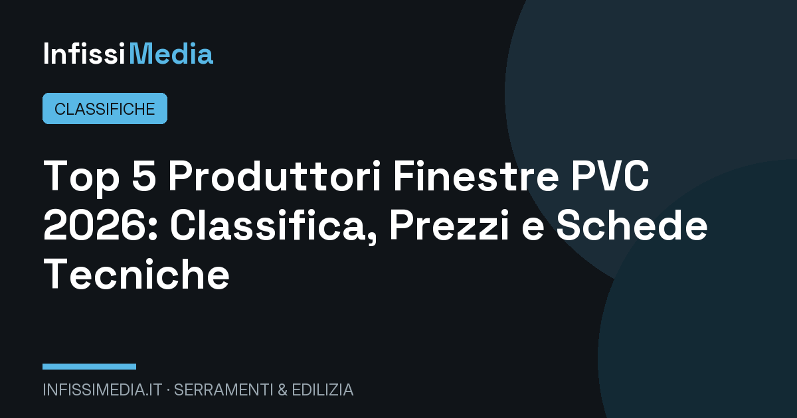
Top 5 produttori di finestre in PVC: la classifica 2026 con prezzi e schede tecniche
Internorm, Finstral, Oknoplast, Veka e Schüco a confronto: trasmittanza, profili, vetri e garanzie.
Il cuore del magazine: classifiche indipendenti costruite su schede tecniche, certificazioni, trasmittanze, classi antieffrazione e prezzi rilevati sul mercato italiano. Nessuna posizione è sponsorizzata.

Internorm, Finstral, Oknoplast, Veka e Schüco a confronto: trasmittanza, profili, vetri e garanzie.
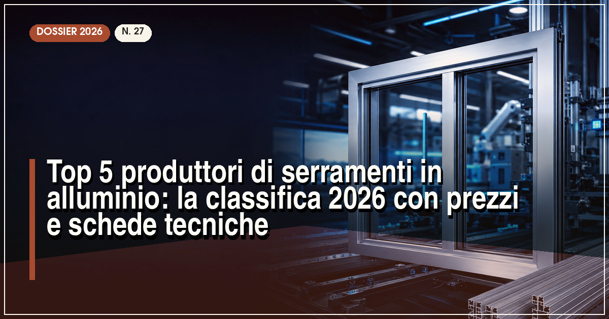
I sistemi a taglio termico che dominano il mercato italiano, dal profilo minimale alla grande vetrata.

Calore, estetica e sostenibilità: le migliori finestre in legno lamellare sul mercato.
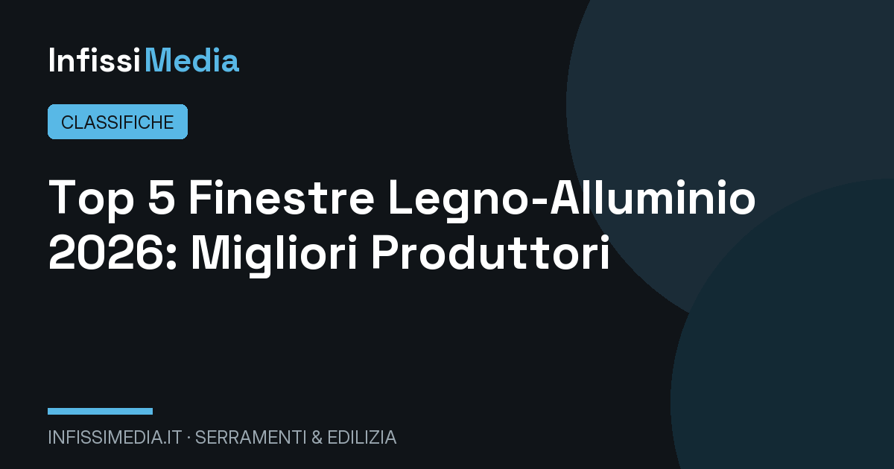
Eleganza del legno dentro, resistenza dell'alluminio fuori: il meglio dei due mondi.
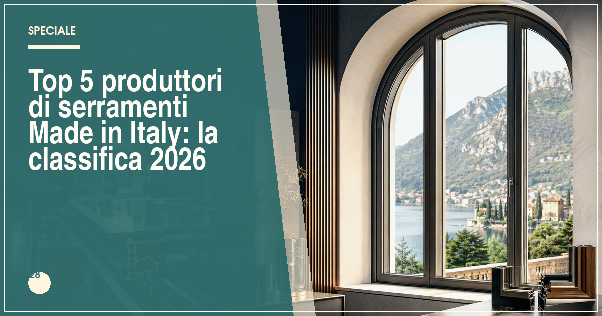
L'eccellenza italiana dei serramenti tra qualità artigianale e innovazione industriale.
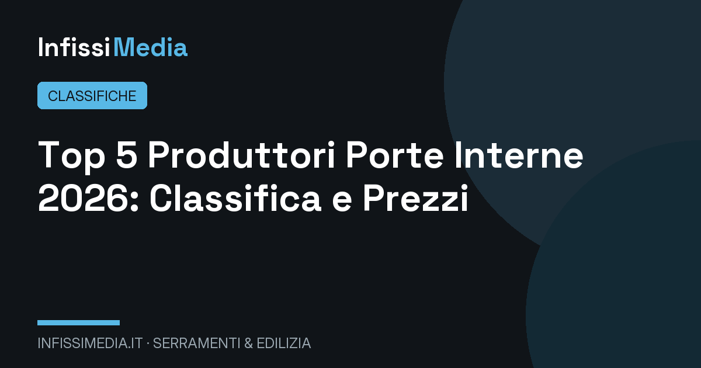
Battenti, scorrevoli e filo muro: i brand che uniscono design e durata.
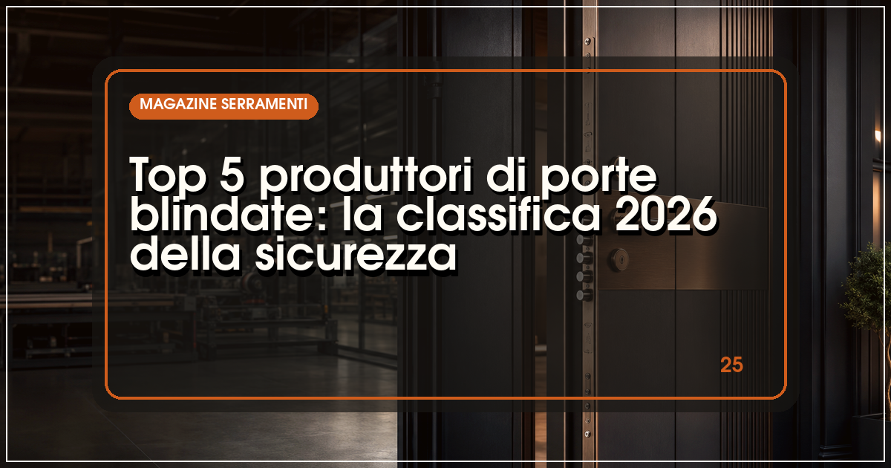
Classe 3 e 4 antieffrazione, cilindri europei e design: le porte d'ingresso più sicure.
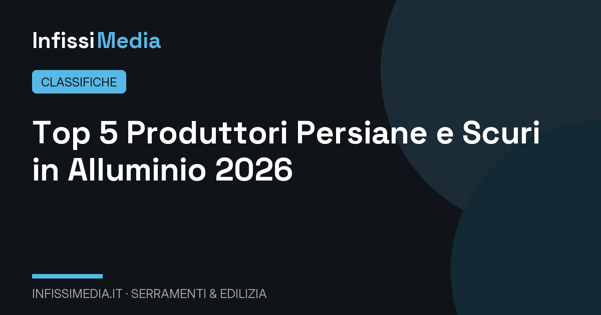
Orientabili, blindate e certificate antieffrazione: gli oscuranti che proteggono casa.
Plissettate, a rullo, magnetiche e motorizzate: la protezione anti-insetti su misura.
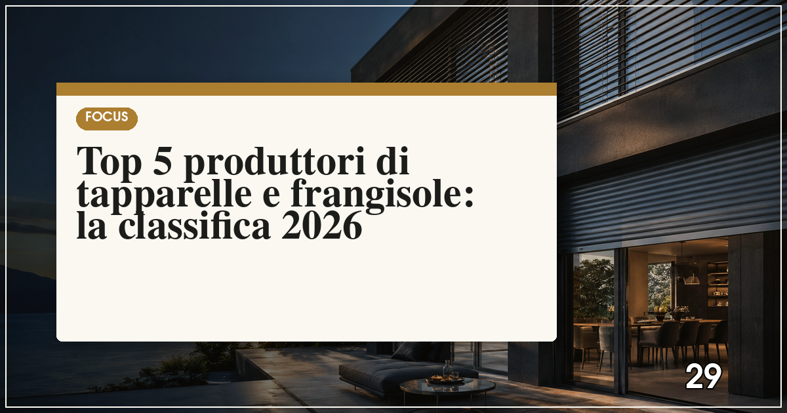
Avvolgibili in alluminio coibentato e lamelle orientabili per il controllo di luce e calore.
Qualità, innovazione, assistenza e prezzo: il podio dei brand che contano davvero.
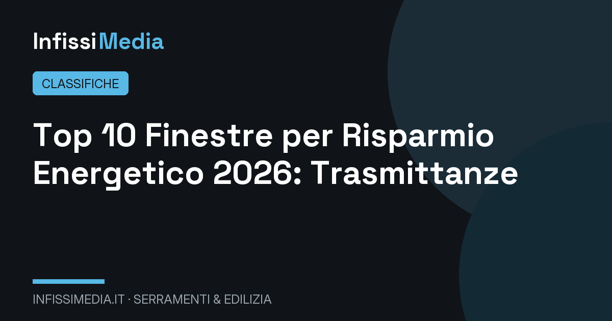
Le finestre con il valore Uw più basso sul mercato: fino al 40% di bolletta in meno.
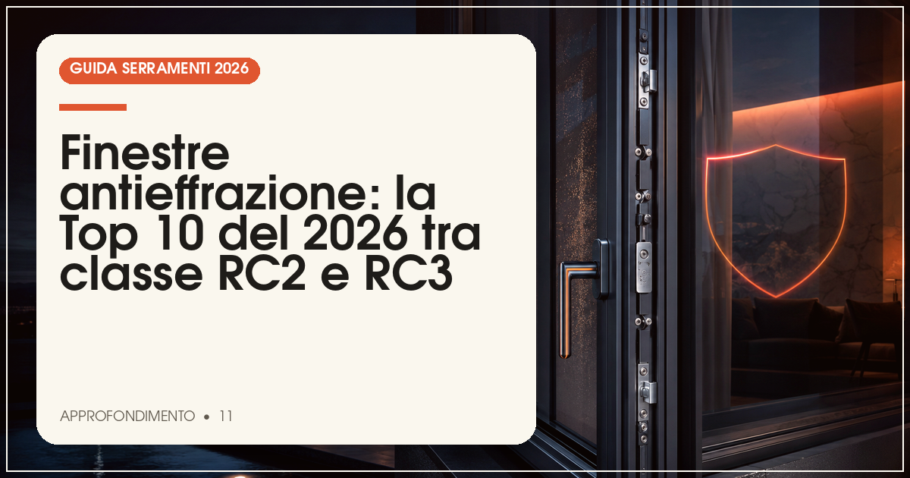
Vetri stratificati, ferramenta antiscasso e certificazioni UNI ENV 1627.

Per chi vive vicino a strade, ferrovie e aeroporti: il silenzio è un valore misurabile.
Dieci porte d'ingresso certificate a confronto, dalla classe 3 alla classe 4.
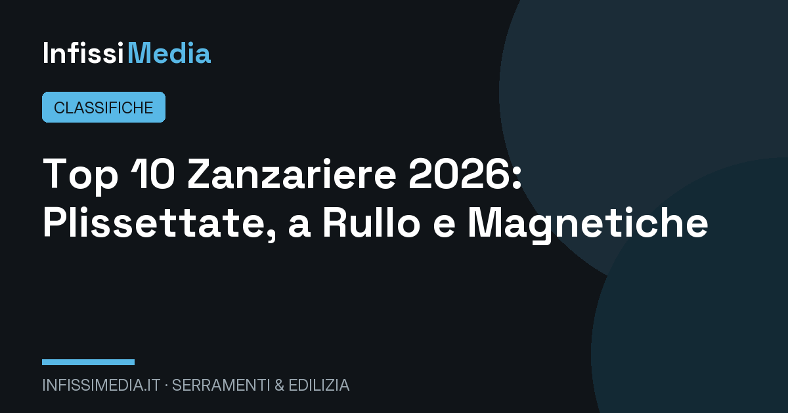
Dal modello base alla zanzariera motorizzata: quale scegliere per ogni ambiente.
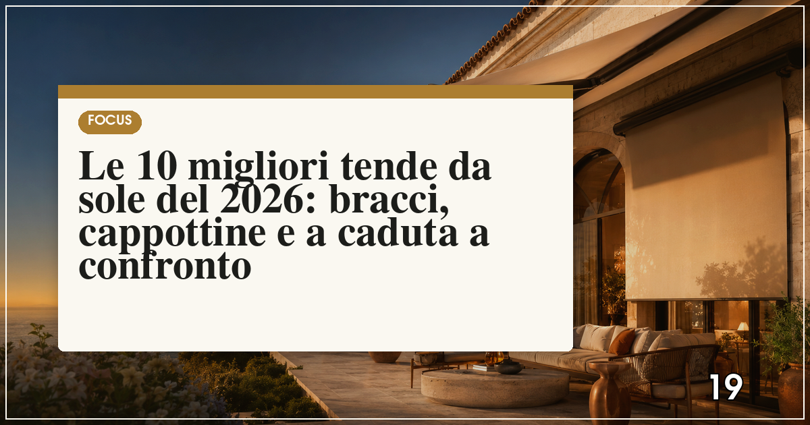
Protezione solare per balconi, terrazzi e giardini: tessuti, motori e sensori vento.
Quando la porta diventa arredo: le soluzioni più belle per gli interni contemporanei.

Pareti vetrate che scompaiono: i sistemi scorrevoli per la casa moderna.
Luce naturale in mansarda: bilici, a compasso e motorizzati a confronto.